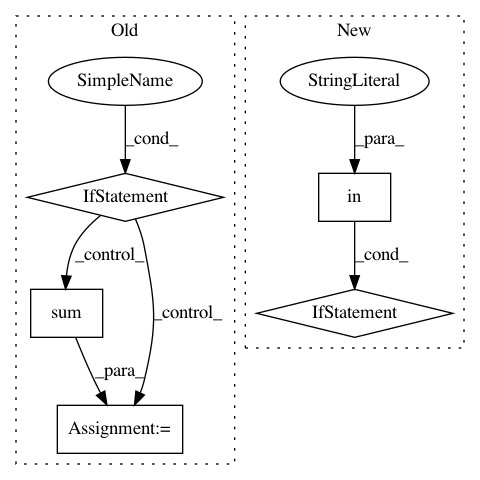

16d2eb3061f1bed8ade390c5e2a2c1de9daa3509,theanolm/optimizers/basicoptimizer.py,BasicOptimizer,__init__,#BasicOptimizer#Any#Any#Any#,16
Before Change
gradients = tensor.grad(cost, wrt=list(self.network.params.values()))
// Normalize the norm of the gradients to given maximum value.
if "max_gradient_norm" in optimization_options:
max_norm = optimization_options["max_gradient_norm"]
epsilon = optimization_options["epsilon"]
squares = [tensor.sqr(gradient) for gradient in gradients]
sums = [tensor.sum(square) for square in squares]
total_sum = sum(sums) // sum over parameter variables
norm = tensor.sqrt(total_sum)
target_norm = tensor.clip(norm, 0.0, max_norm)
gradients = [gradient * target_norm / (epsilon + norm)
for gradient in gradients]
self._gradient_exprs = gradients
self.gradient_update_function = \
theano.function([self.network.minibatch_input,
self.network.minibatch_mask],
After Change
for name, value in self.param_init_values.items()}
// numerical stability / smoothing term to prevent divide-by-zero
if not "epsilon" in optimization_options:
raise ValueError("Epsilon is not given in optimization options.")
self._epsilon = optimization_options["epsilon"]
// maximum norm for parameter updates
if "max_gradient_norm" in optimization_options:
In pattern: SUPERPATTERN
Frequency: 3
Non-data size: 5
Instances
Project Name: senarvi/theanolm
Commit Name: 16d2eb3061f1bed8ade390c5e2a2c1de9daa3509
Time: 2015-12-04
Author: seppo.git@marjaniemi.com
File Name: theanolm/optimizers/basicoptimizer.py
Class Name: BasicOptimizer
Method Name: __init__
Project Name: rtqichen/torchdiffeq
Commit Name: 47ba6dedb917847460b098c5f2b776a4c8bd0c1b
Time: 2021-01-05
Author: rtqichen@gmail.com
File Name: torchdiffeq/_impl/adjoint.py
Class Name:
Method Name: odeint_adjoint
Project Name: chainer/chainerrl
Commit Name: 93d87b907ff5ef42753492c79e602b31f9e7df00
Time: 2018-11-03
Author: seann999@gmail.com
File Name: chainerrl/agents/categorical_dqn.py
Class Name: CategoricalDQN
Method Name: _compute_loss